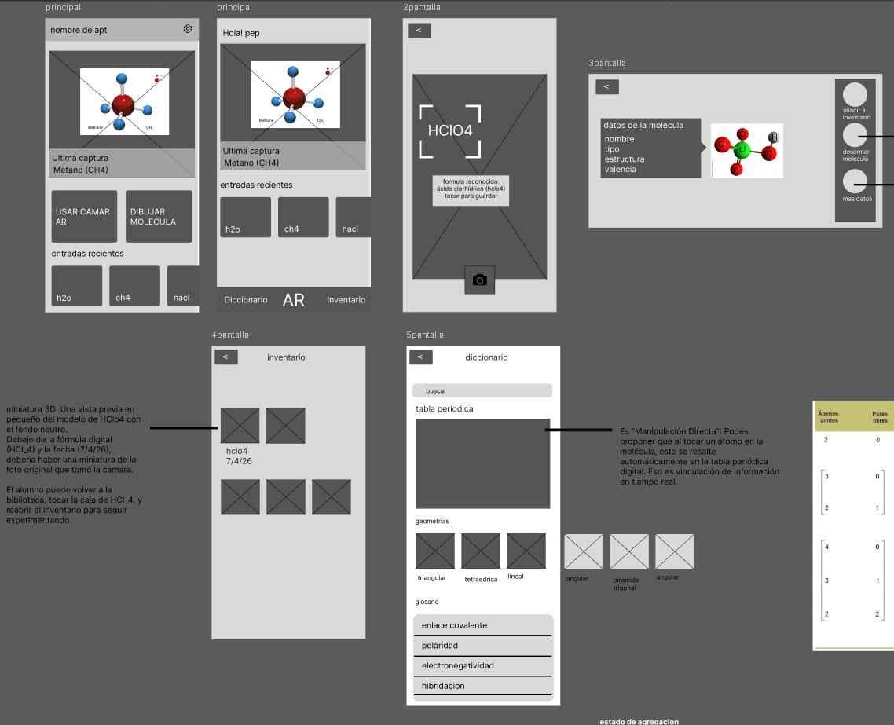
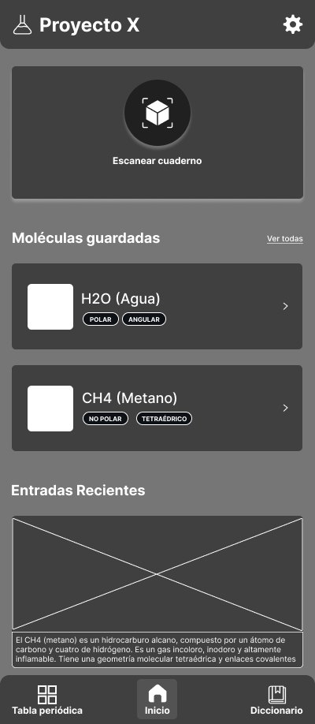
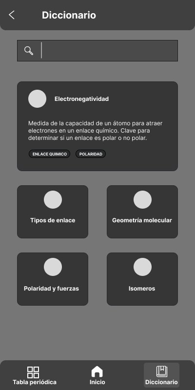
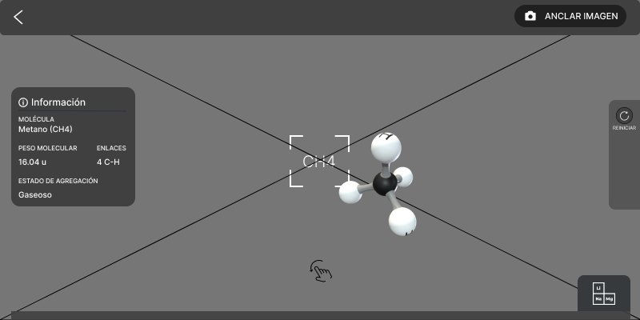
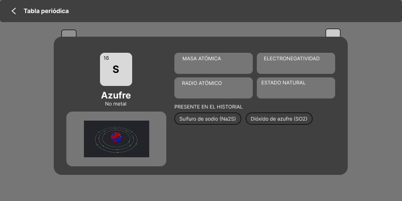

Una app para estudiantes de secundario: apuntás la cámara a una fórmula escrita a mano en el cuaderno y aparece la molécula en 3D, lista para girarla y explorarla.
Ficha del proyecto
Proyecto
MoleculAR
Contexto
Tesis de grado · Lic. en Diseño Multimedial · UNLP · 2026
Equipo
Individual
Tecnología
Unity · Gemini · PubChem · Figma
Estado
En desarrollo
Tipo:AppWebJuegoRealidad aumentada
Hice:InvestigaciónUX/UIDesarrollo
1 · Apuntás al cuaderno y escanea la fórmula2 · Aparece la molécula en 3D y la explorás tocando átomos y fichas
El problema
Siempre me gustó la química, pero me costaba: una fórmula como H₂O es una abstracción, y hay que imaginar en 3D algo que solo ves escrito en 2D. Quise hacer la herramienta que me hubiera servido a mí.
Cada dato se puede ver, no solo leer
Al tocar una ficha, la molécula cambia para mostrar ese concepto.
Estado: aparecen más moléculas moviéndose como en un líquidoEnlaces: se marcan los enlaces y las cargas parciales (δ+ y δ−)Geometría: se dibuja el ángulo de 104° entre los hidrógenos
De un prototipo a cualquier molécula
La primera versión usaba un modelo entrenado en Teachable Machine, que solo reconocía las moléculas con las que lo había entrenado. Para que funcionara con cualquier fórmula, conecté la app a internet: Gemini lee lo escrito a mano y PubChem devuelve los datos reales de la molécula. La primera versión quedó adentro de la app: sin internet, sigue reconociendo las 3 moléculas con las que la entrené.
Decisiones de diseño
La cámara ocupa toda la pantalla para que el cuaderno sea el protagonista, y los controles quedan abajo, al alcance del pulgar. Los datos no son solo texto: cada ficha activa una visualización en 3D. Todo se conecta (molécula → átomo → tabla periódica) para que se pueda explorar sin perderse, y el tamaño del texto es ajustable.
Del wireframe a la app
Arranqué directo con wireframes. La primera versión fue para ordenar ideas; después armé cada pantalla en escala de grises antes de llevarla a Unity.

Versión 1: para ordenar ideas, todavía sin cuidar tamaños

Inicio

Diccionario

La molécula sobre la cámara

Ficha de un elemento
Explorar y estudiar
Del átomo a la tabla: tocás un átomo de la molécula y llegás a su ficha y a su lugar en la tabla periódica, con la estructura de Lewis.
Tabla periódica: el color indica la categoría y el borde, el estado a 25 °C.
Diccionario: como mapa conceptual o como lista con buscador.
Accesibilidad: tamaño de texto ajustable.
Pruebas con usuarios
La probé con amigos y familia mientras la desarrollaba. Dos de ellas saben química y me ayudaron a armar el primer boceto de la red conceptual del diccionario y a definir qué datos tenía que mostrar sí o sí cada molécula. Con sus comentarios cambié los picómetros (pm) por ángstroms (Å) y rediseñé elementos que parecían botones sin serlo.
Lo que aprendí
Era la primera vez que programaba realidad aumentada desde cero, y al principio me pareció demasiado ambicioso para una tesis. La app terminó funcionando, y en el camino aprendí a iterar: probar, ver qué falla y cambiar de enfoque.
Qué sigue
Disfruté mucho hacerla, y también aprendí que un proyecto de realidad aumentada de este tamaño es mucho para una sola persona. Lo que más me gustó fue ordenar la información y pensar cada pantalla, y por ahí quiero seguir: diseño de apps y sitios web.